Introduction
Requirements
Customer's requirements are available here.
Requirement analysis
Glossary
NOUNS
-
DDR robot : A device capable of moving by means of external commands. -
Transport trolley : A device capable of moving cars by carrying them over it. It is shaped like an RD-side square and is built on top of a DDR robot. -
Empty room : A room bounded by walls and free of obstacles in the internal area. -
Map : A logical grid of the parking-area in which each cell has the shape of a square with an RD side. To each cell of the map we associate one and only one of the following symbols:
X: Parking-slot. The transport trolley cannot walk over this cell.
X: Fixed obstacle. The transport trolley cannot walk over this cell.
0: Empty cell. The transport trolley can walk over this cell.
The symbol r means that the transport trolley is located above that cell. -
Client : The user who wants to park and then pick up the car from the parking area. He interacts with the service via the ParkServiceGUI. -
Manager : The user who administers the system via the ParkServiceStatusGUI. He has the job (and permissions) to observe the state of the system in order to manage critical situations as described in the requirements document. -
Parking-area : The bounded area where the transport trolley performs its tasks. In this area there are six parking-slots, a fan, a thermometer and two doors (indoor and outdoor). -
Parking-slot : It is shaped like an RD-side square and represent the area where the transport trolley parks the cars. There are 6 parking-slots in the parking-area. We refer to a free parking-slot if there isn't a car on its area, otherwise we refer to a busy parking-slot. At most one car can stay on a parking-slot. -
Indoor : The door from which the car enters in the parking-area. -
Indoor-area : The area from which the car is taken by the transport trolley to be parked. The area is equipped with a weight sensor capable of detecting the presence of the car in the area. The area is therefore considered free when the sensor does not detect the weight and engaged otherwise. For logical purposes, the indoor area could be also considered engaged from the moment we allow a car to enter in it and until the transport trolley takes it. -
Current state : The logical state of system's entities at a specific time.
Fan: on/off.
Thermometer: measured temperature.
WeightSensor: measured weight.
Outsonar: measured distance.
TransportTrolley:IDLE : The Transport Trolley is at HOME position and waits for a request.WORKING : The Transport Trolley is serving a request or waiting for it.STOPPED : The Transport Trolley cannot serve any request or perform any movement.
-
At home : A cell in the parking-area where the transport trolley waits when there aren't incoming requests. -
TokenID : A progressive number that uniquely identifies at most one car in the parking-area. If the car is currently parked in the parking-area the TokenID given by the client must match with the dual associated to a busy parking-slot in which the car is parked. -
Outdoor : The door from which the car exits from the parking-area. -
Outdoor-area : The area where the car stays after the pick up task. The area is equipped with a sonar that detects the presence of the car. The area is therefore considered free if the sonar doesn't detect the presence of the car, and engaged otherwise. The area must be freed by the client in at most DTFREE time. -
WeightSensor : A sensor that measures the weight of the car in the indoor area. It could be logically seen as like as two level sensor: car detected, car not detected. -
Outsonar : A sensor that measures the free space in front of him in the outdoor area. It could be logically seen as like as two level sensor: car detected, car not detected. The customer asked us to test the system with a real sonar and not with a mocked one. -
Thermometer : A sensor that measures the temperature in the parking area. -
Fan : An on/off device used to lower the temperature when it is above the TMAX threshold. It can be both automated or controlled by the manager. -
TMAX : The threshold temperature. When the temperature is above TMAX the manager should stop the transport trolley and start the fan. When the temperature is lower than TMAX the manager should start (resume) the trolley -
DTFREE : The time limit within which a car must free the outdoor area. -
ParkServiceStatusGUI : Used by the manager to observe the current state of the parking-area. It also provides the functionality to start/stop the transport trolley and the fan. -
ParkServiceGui : Used by the client to notify the interest to notify the interest to enter in the parking area and to pick up the car. -
Hopefully/Optionally : The customer hopes to see the default behavior implemented but also the alternative one.
VERBS
supervises : the parking-manager should be able to control the current state of the parking-areahandles critical situations : on the occurrence of particular conditions, the parking-manager should be able to manage the situation, doing the right thing.park the car : the trolley should be able to take the car from the Indoor-area e put it in one of the free parking slots.pick up the car : the trolley should be able to take the car from the right parking slot e bring it to the Outdoor-area.move (for trolley): sequence of steps and turn left/right to get to destinationdeduce the number of the parking slot : the ParkManagerService should be able to find the right parking slot from the client's TOKENID.update : at each change the ParkManagerService must keep consistent the data shown by the ParkServiceStatusGUIstop/start trolley : the parking-manager should be able to stop, and then resume, the trolley's behavior. This operation is always up to the parking-manager.start/stop fan : the parking-manager should be able to stop, and then resume, the fan's behavior. This operation can either be automated (by checking the temperature) or not.could also be automated : in addition to the manual management of the parking-manager, the fan could start and stop by itself checking the temperature.
Additional requirements given by the customer
- The orientation of the TransportTrolley has not rilevance when loading the car on itself.
- The TransportTrolley can carry one car at time.
Provided hardware and software
Map
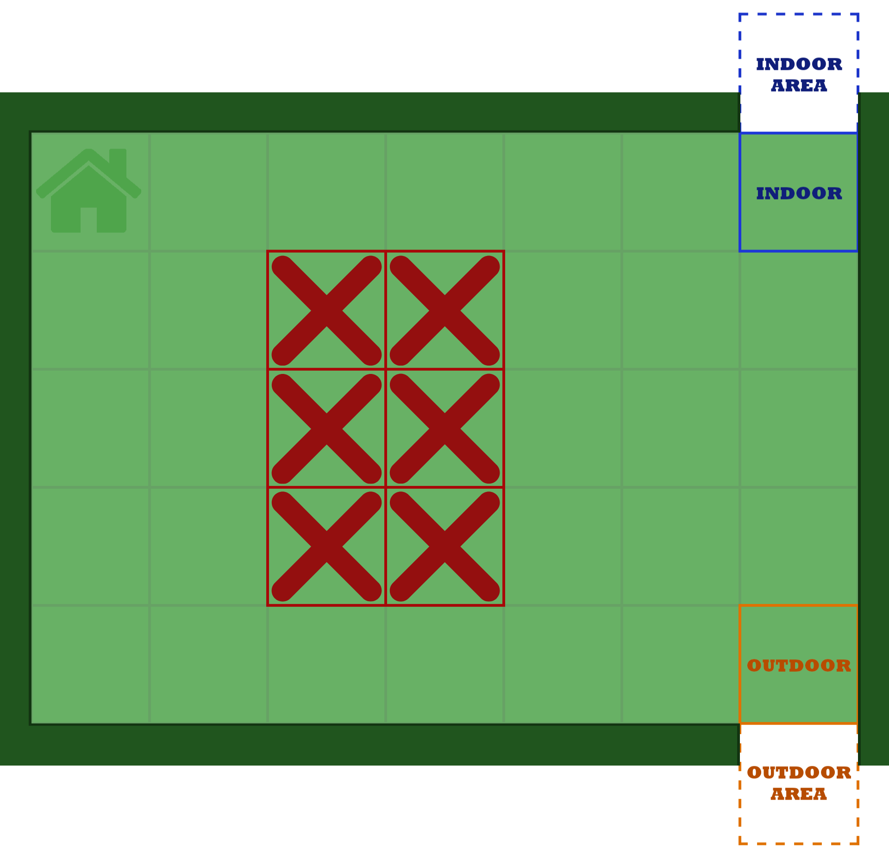 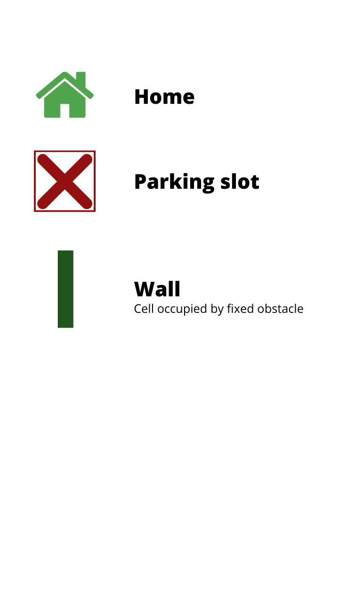
The parking-area includes 6 parking slots, one indoor and one outdoor, with their respective indoor-area and outdoor-area.
A version of the map with the cells coordinates is available at this link: emptyMapWithCellCoordinates.png
The code to realize the virtual map has been provided by the customer: it.unibo.kotlinSupports/mapRoomKotlin.
The state of the parking-area (i.e. parking-slot available, indoor or outdoor area free) should be observable.
Note : the term "observable" is used to express the need of accessing some information without waiting for or stopping the observed entity.
Transport Trolley
The virtual environment (with virtual robot) WEnv has been provided to us by the customer. So we will perform all tests on this virtual environment.
The code in it.unibo.qak21.basicrobot provided by the customer is able to abstract from the real implementation of the DDR Robot and is compatible also with WEnv.
The state of the transport trolley (idle, working or stopped) should be observable.
Sonar
The code for a real sonar has been provided by the customer: SonarAlone.c.
We should initially simulate this sensor with a mock-object or mock-actor but also integrate a real sonar in the final application. It should be modeled as active component.
The state of the sensor should be observable.
Weight Sensor
The customer doesn't provide code for the weight sensor. We should simulate this sensor with a mock-object or mock-actor. It could be modeled as both passive or active component. The state of the sensor should be observable.
Thermometer
The customer doesn't provide code for the thermometer. We should simulate this sensor with a mock-object or mock-actor. It could be modeled as both passive or active component. The state of the sensor should be observable.
Fan
The customer doesn't provide code for the fan. We should simulate this sensor with a mock-object or mock-actor. It should be modeled as passive component. The state of the sensor should be observable.
Use Cases - Interactions
This section summarizes the interactions between the entities of the most interesting use cases of the application. The management of corner cases is postponed to the analysis of the problem, so the following use cases are valid only if each assumption (precondition) is verified.
Legenda
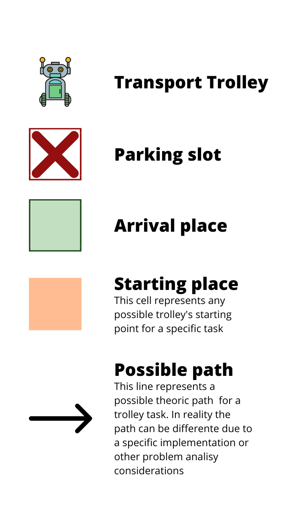
Client acceptIn request
Assumptions:
- The initial state of the INDOOR-AREA is: free.
- There is at least one parking slot available.
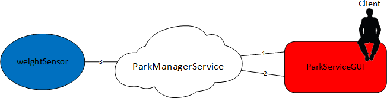
- The client via the ParkServiceGUI notifies to the ParkManagerService the interest to enter in the INDOOR-AREA.
- The ParkManagerService send to the client the SLOTNUM and permits him to enter in the INDOOR AREA.
- The weightSensor detects the weight of the car.
Client carEnter request
Assumptions:
- The car is in the INDOOR-AREA.
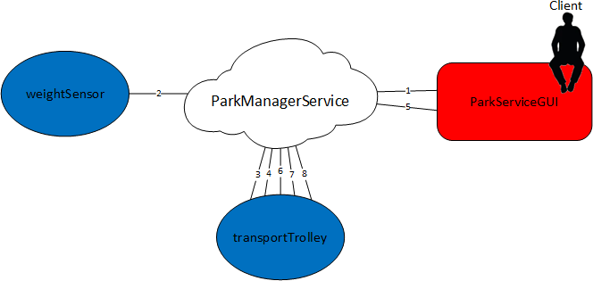
- The client press the CARENTER button in the ParkServiceGui and informs the ParkManagerService about the intention to enter in the parking-area.
- The weightSensor confirms the presence of the car in the INDOOR-AREA.
- The ParkManagerService informs the transport trolley to go at the INDOOR.
- The TransportTrolley informs the ParkManagerService that it is arrived at the INDOOR.
- The ParkManagerService sends to the client the TOKENID.
- The ParkManagerService informs the TransportTrolley to start the park of the car at the slot SLOTNUM.
- The TransportTrolley informs the ParkManagerService that finished its job.
- The ParkManagerService informs the TransportTrolley to go to one of the following specific positions:
- HOME Position
- INDOOR
- Parking slot n. #.
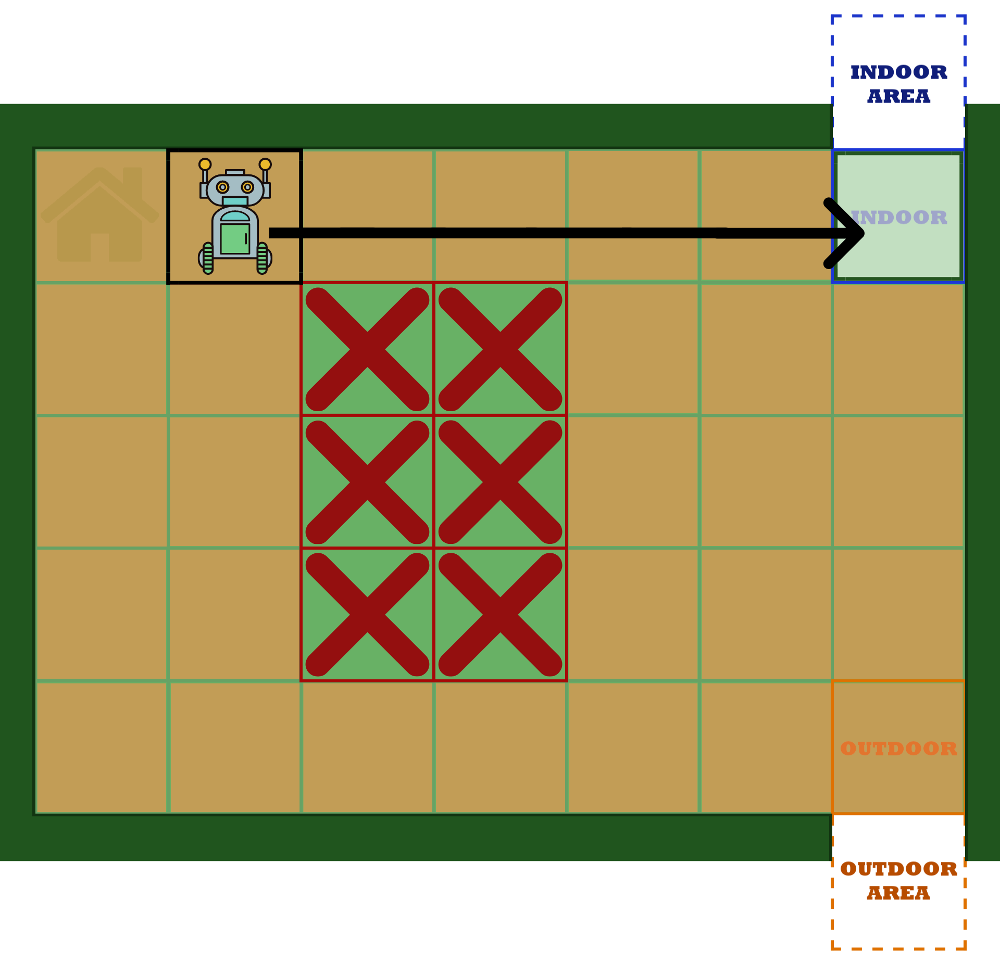
3. The ParkManagerService informs the transport trolley to go at the INDOOR.
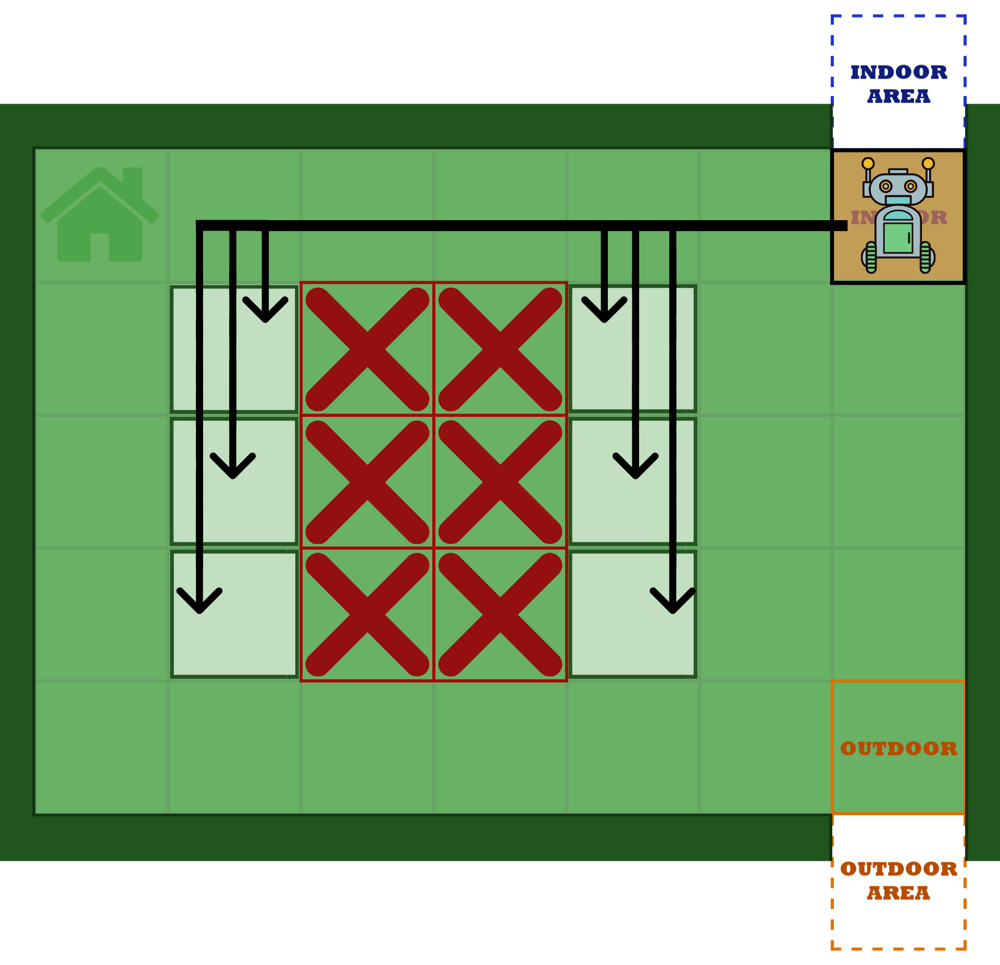
6. The ParkManagerService informs the TransportTrolley to start the park of the car at the slot SLOTNUM.
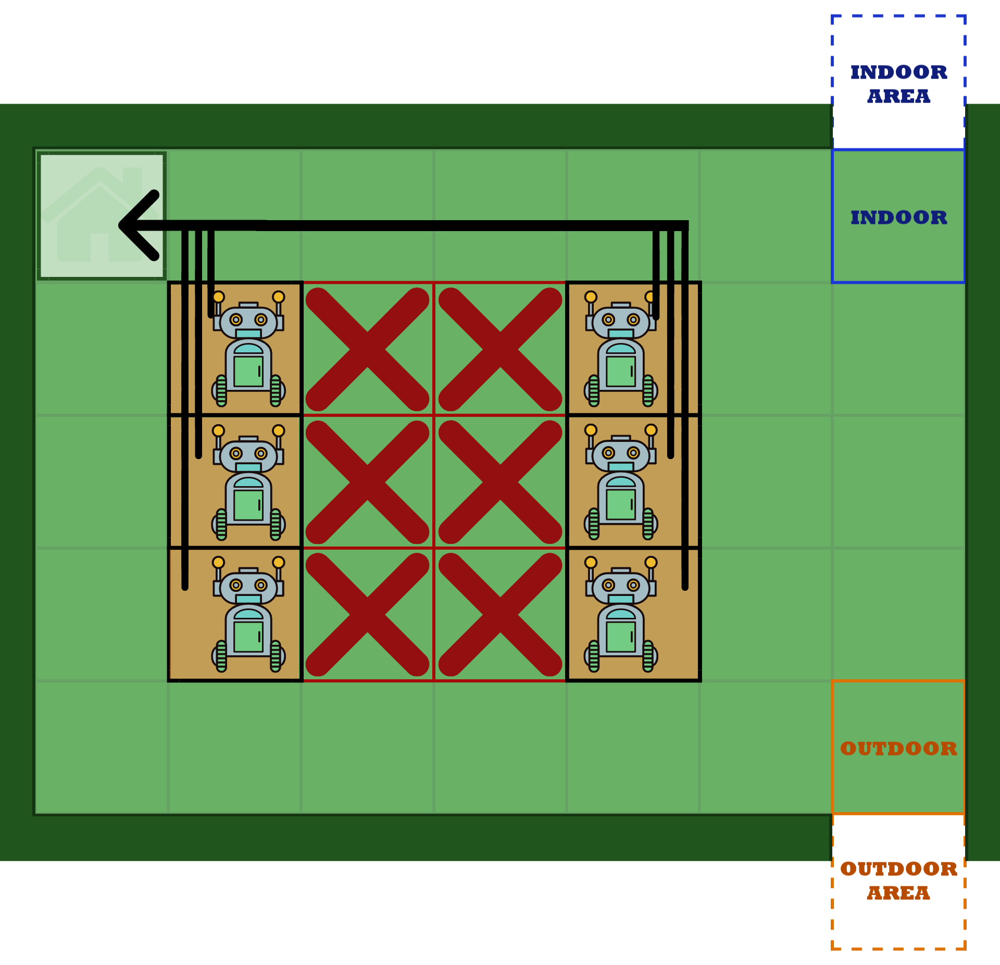
8. The ParkManagerService informs the TransportTrolley to go HOME Position
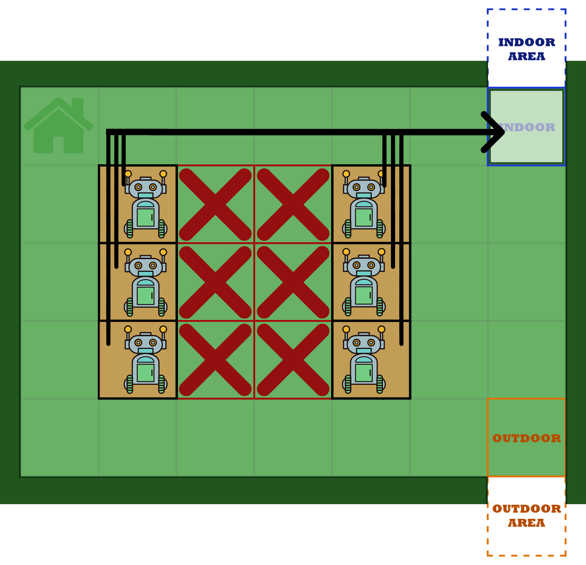
8. The ParkManagerService informs the TransportTrolley to go INDOOR
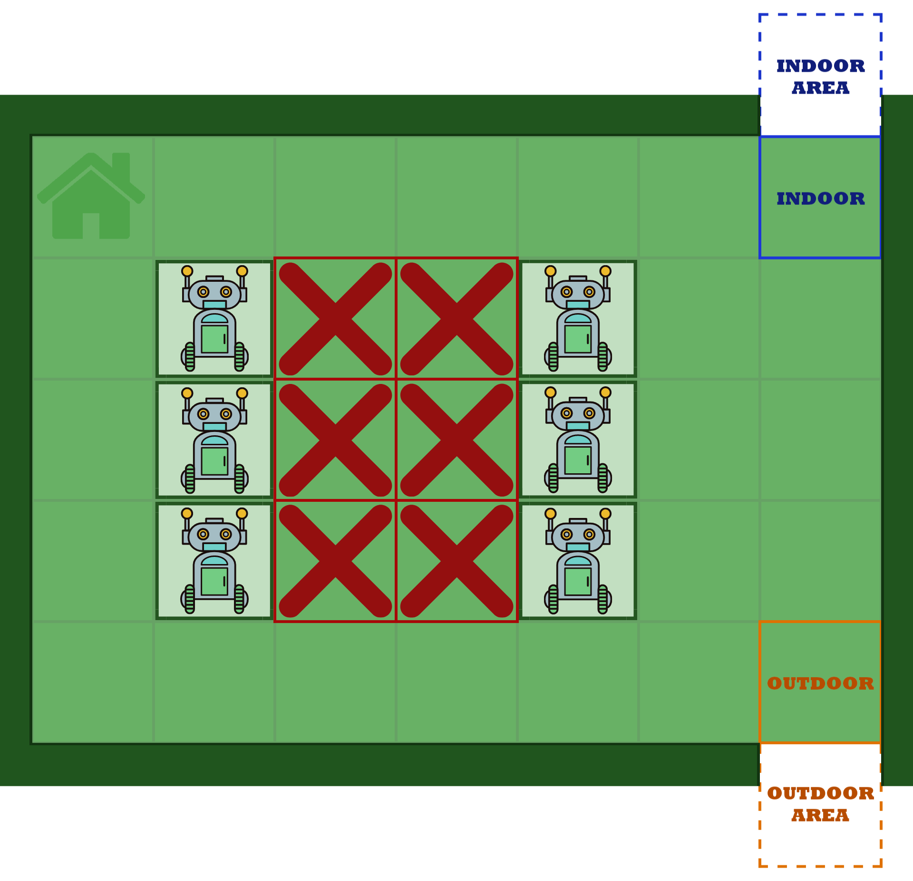
8. The ParkManagerService informs the TransportTrolley to go Parking Slot n.#
Client acceptOut request
Assumptions:
- The initial state of the OUTDOOR-AREA is: free.
- The TOKENID is valid.
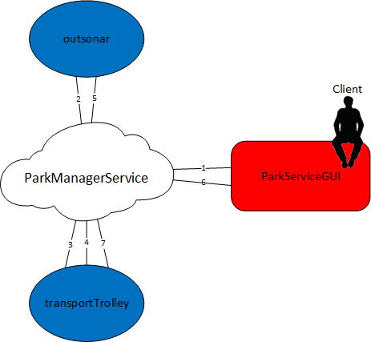
- The client via the ParkServiceGUI informs the ParkManagerService that he want to pickup the car and shows its TOKENID.
- The outSonar confirms that the OUTDOOR-AREA is free.
- The ParkManagerService checks the validity of the TOKENID and informs the TransportTrolley to pick up the car at the parking-slot identified by the TOKENID.
- The TransportTrolley informs the ParkManagerService that it has finished its job.
- The sonar detects the presence of the car in the OUTDOOR AREA.
- The ParkManagerService informs the client that he can pick up the car from the OUTDOOR-AREA.
- The ParkManagerService informs the TransportTrolley to go to one of the following specific positions:
- HOME Position
- INDOOR
- Parking slot n. #.
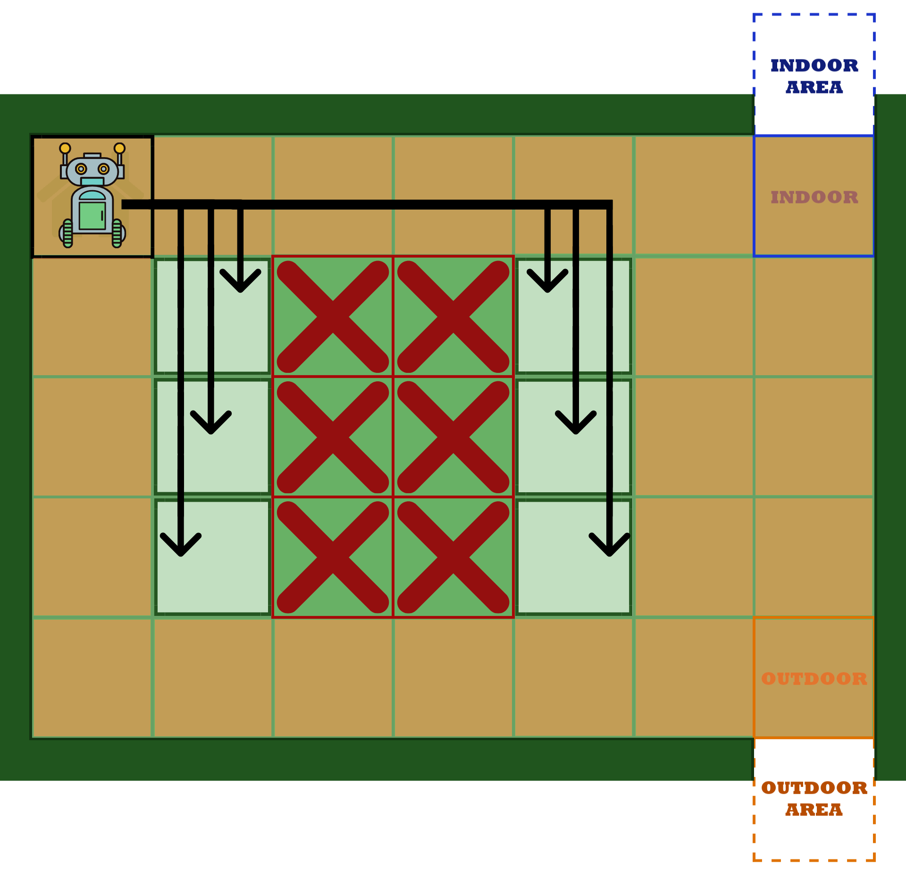
3. The ParkManagerService informs the TransportTrolley to pick up the car at the parking-slot.
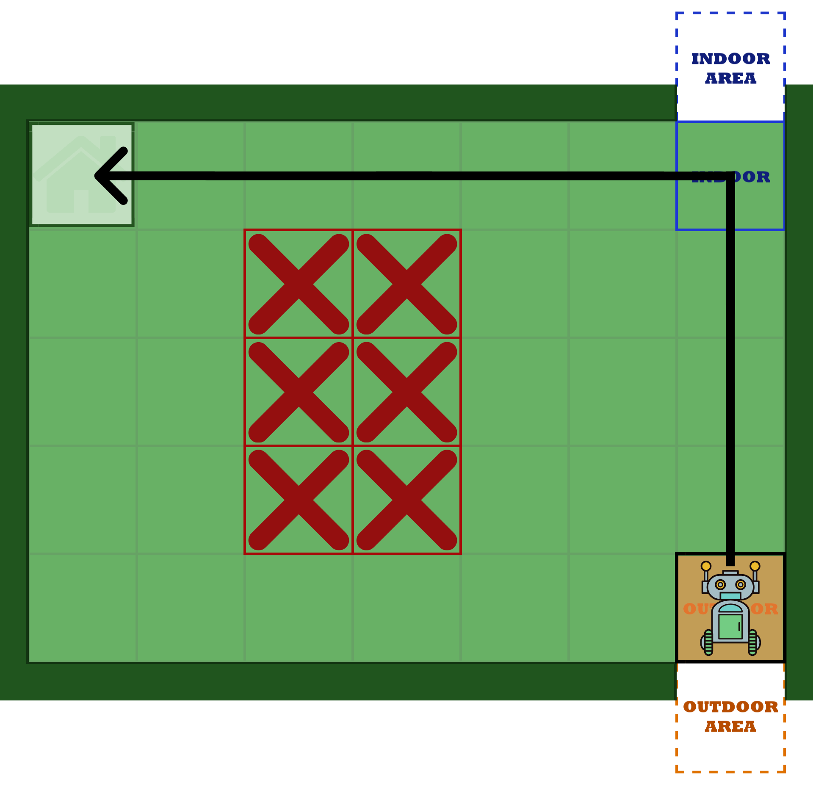
7. The ParkManagerService informs the TransportTrolley to go HOME Position
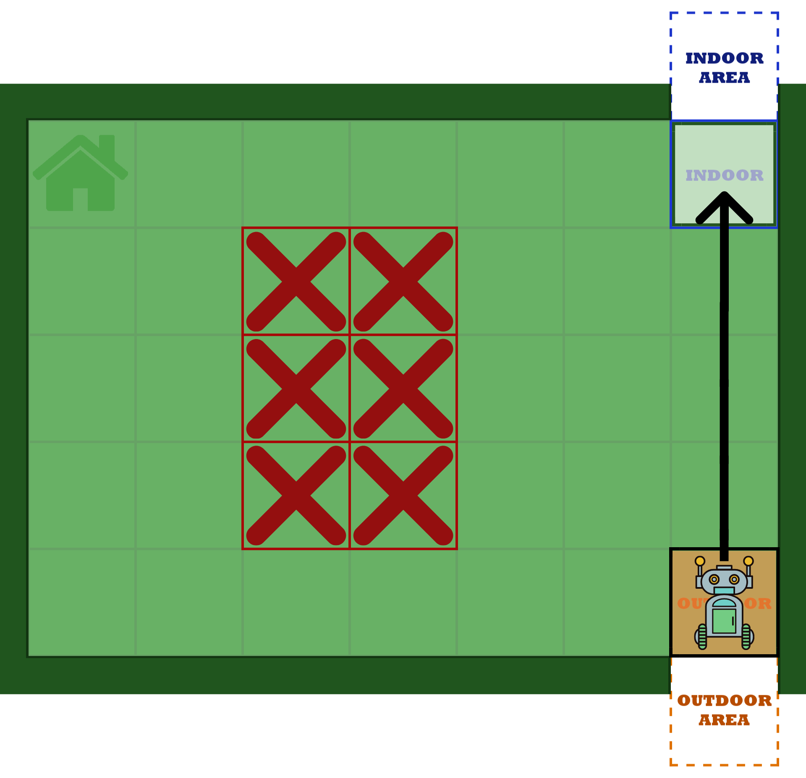
7. The ParkManagerService informs the TransportTrolley to go INDOOR
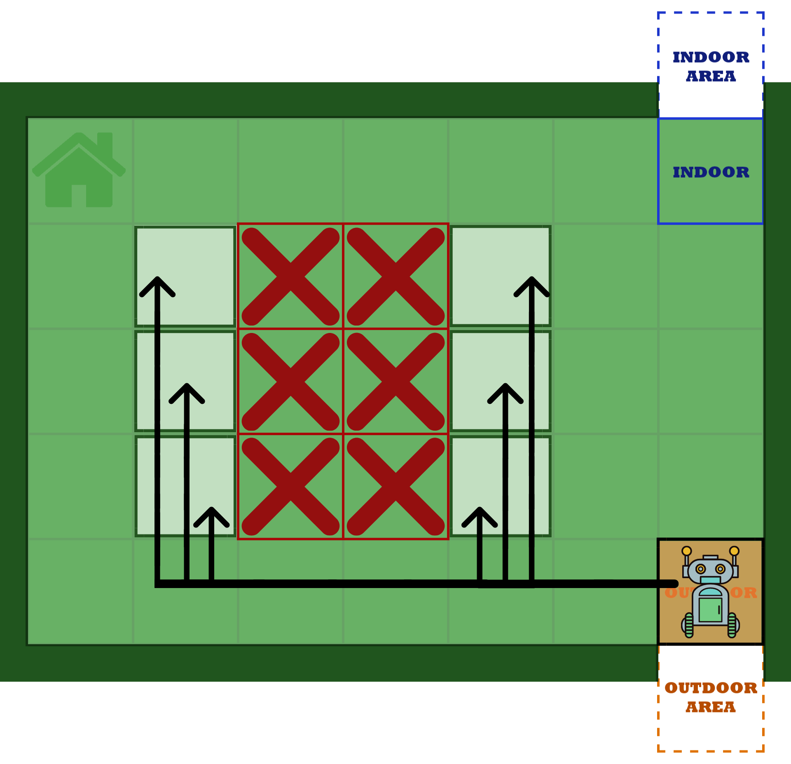
7. The ParkManagerService informs the TransportTrolley to go Parking Slot n.#
Parking-Manager handle temperature from LOW to HIGH
Assumptions:
- The start/stop of the fan is not in automatic mode.
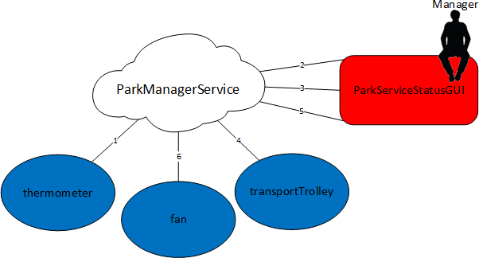
- The ParkManagerService monitors the temperature measured by the thermometer.
- The temperature (TA) measured has become greater than TMAX, so the ParkManagerService notifies that to the ParkServiceStatusGUI.
- The manager by means of the ParkServiceStatusGUI notifies to the ParkManagerService to stop the transport-trolley.
- The ParkManagerService stops the TransportTrolley.
- The manager by means of the ParkServiceStatusGUI notifies to the ParkManagerService to start the fan.
- The ParkManagerService starts the fan.
Parking-Manager handle temperature from HIGH to LOW
Assumptions:
- The start/stop of the fan is not in automatic mode.
- The ParkManagerService monitors the temperature measured by the thermometer.
- The temperature (TA) measured has become lower than TMAX, so the ParkManagerService notifies that to the ParkServiceStatusGUI.
- The manager by means of the ParkServiceStatusGUI notifies to the ParkManagerService to start the transport-trolley.
- The ParkManagerService start the TransportTrolley.
- The manager by means of the ParkServiceStatusGUI notifies to the ParkManagerService to stop the fan.
- The ParkManagerService stops the fan.
Parking-Manager watches current status of the Parking-Area
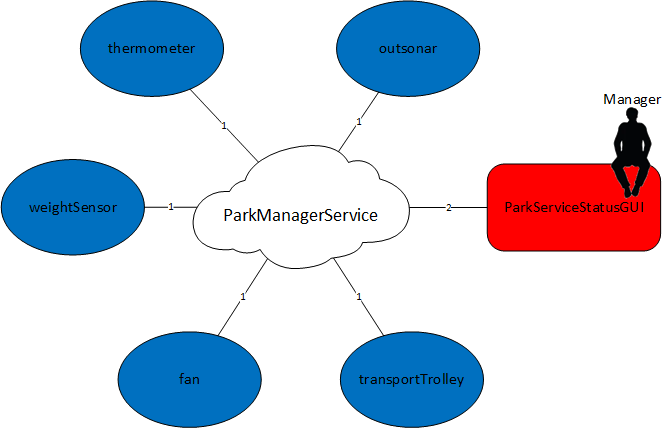
- The ParkManagerService monitors the status of the entities in the parking-area.
- The data are shown on the ParkServiceStatusGUI.
Parking-Manager handle alarm
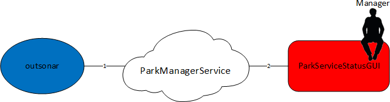
- The sonar has been detecting the car in the outdoor area for at least a DTFREE time. So informs the ParkManagerService about this event.
- The ParkManagerService sends the ALARM to the ParkServiceStatusGUI.
Functional Requirements
F1
The client must have the possibility to notify his interest to park his car through the ParkServiceGUI.
F2
The system must accept a new client parking-car request only when there is at least a free parking slot, the robot is not stopped and if the indoor area is free at the request time. Otherwise the client should wait or the system should notify the client to wait.
F3
The system must send to the client an id (SLOTNUM) of the parking slot if there are available slots, otherwise the client should receive 0.
F4
The client must have the possibility to press the CARENTER button in the ParkServiceGUI when he has left his car in the indoor area.
F5
When the TransporTrolley is parking the client's car, our system must be able to produce a unique identifier (TOKENID) and send it to the client through the ParkServiceGUI in order to identify that car and the parking slot in which it has been parked.
F6
The client must have the possibility to pick up his car by providing to the system through the ParkServiceGUI the TOKENID acquired during the parking phase.
F7
The system must be able to validate the TOKENID provided by the client. If it is valid, the system must continue the pick up phase, otherwise the system should be able to send a proper notification to the client.
F8
The system must be able to infer the correct parking slot of the car to pick up from the corresponding TOKENID.
F9
The system must accept a client pick up request only when the TOKENID submitted is valid, the outdoor is free and the TranportTrolley is not stopped. Otherwise the client should wait or the system should notify the client to wait.
F10
The parking manager, through the ParkServiceStatusGUI, must have the possibility to watch the current status of the parking area, including the sensors (WeightSensor, OutSonar and Thermometer), the Fan (on/off, manual/automatic) and the TransportTrolley (idle, working, stopped).
F11
The parking manager, through the ParkServiceStatusGUI, must have the possibility to stop the TransportTrolley and then, to re-start it.
F12
The parking manager, through the ParkServiceStatusGUI, must have the possibility to set the fan mode to "manual" or "automatic".
F13
The parking manager, through the ParkServiceStatusGUI, must have the possibility to start the fan when TA > TMAX and stop it when TA <= TMAX, when the fan mode is set to "manual".
F14
The system must be able to autonomously start the fan when TA > TMAX and stop it when TA <= TMAX, when the fan mode is set to "automatic".
F15
The system must be able to notify to the parking manager, through the ParkServiceStatusGUI, when the outdoor-area has not been cleaned within DTFREE time interval.
F16
The WeightSensor must be able to measure the weight within the indoor-area and to notify to the system if the indoor-area is occupied by a car or not.
F17
The OutSonar must be able to detect the presence of a car inside the outdoor-area and to notify to the system if the outdoor-area is occupied by a car or not.
F18
The OutSonar must be a real device in the final deployment.
F19
The Thermometer must be able to measure the temperature inside the parking area and to notify to the system if the temperature is greater or lower than a specific threshold TMAX.
F20
The TransportTrolley must be able to take a car from the indoor and park it. (parking phase)
F21
The TransportTrolley must be able to take a car from its parking slot and release it when it is in the outdoor. (pick up phase)
F22
The TransportTrolley must be able to go back home when there are no more requests available.
F23
The TransportTrolley must not walk over parking-slots or obstacles.
Non Functional Requirements
NF1
The TOKENID generated should be easy to remember and difficult to guess.
NF2
It should be possible to swap easily between real sensors/actuators and simulated mock-objects or mock-actors.
NF3
The system should remember the state of the system after a crash or a simple restart.
NF4
The system should have a proper way to analyze the behavior of the system itself.
NF5
The system should be modeled to work also as a distributed system.
- The orientation of the TransportTrolley has not rilevance when loading the car on itself.
- The TransportTrolley can carry one car at time.
Map
| 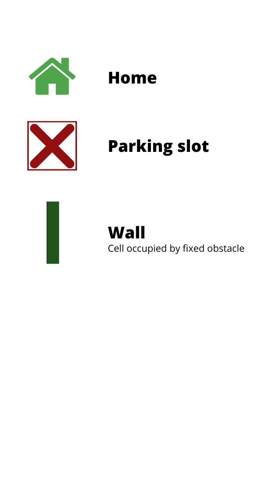 |
A version of the map with the cells coordinates is available at this link: emptyMapWithCellCoordinates.png
{kind=link}
The code to realize the virtual map has been provided by the customer: it.unibo.kotlinSupports/mapRoomKotlin.
The state of the parking-area (i.e. parking-slot available, indoor or outdoor area free) should be observable.
Transport Trolley
The virtual environment (with virtual robot) WEnv has been provided to us by the customer. So we will perform all tests on this virtual environment.The code in it.unibo.qak21.basicrobot provided by the customer is able to abstract from the real implementation of the DDR Robot and is compatible also with WEnv.
The state of the transport trolley (idle, working or stopped) should be observable.
Sonar
The code for a real sonar has been provided by the customer: SonarAlone.c. We should initially simulate this sensor with a mock-object or mock-actor but also integrate a real sonar in the final application. It should be modeled as active component. The state of the sensor should be observable.Weight Sensor
The customer doesn't provide code for the weight sensor. We should simulate this sensor with a mock-object or mock-actor. It could be modeled as both passive or active component. The state of the sensor should be observable.Thermometer
The customer doesn't provide code for the thermometer. We should simulate this sensor with a mock-object or mock-actor. It could be modeled as both passive or active component. The state of the sensor should be observable.Fan
The customer doesn't provide code for the fan. We should simulate this sensor with a mock-object or mock-actor. It should be modeled as passive component. The state of the sensor should be observable.Legenda
Client acceptIn request
| Assumptions: |
|---|
|
|
Client carEnter request
| Assumptions: |
|---|
|
|
3. The ParkManagerService informs the transport trolley to go at the INDOOR. |
|
|
6. The ParkManagerService informs the TransportTrolley to start the park of the car at the slot SLOTNUM. |
||
|
8. The ParkManagerService informs the TransportTrolley to go HOME Position |
8. The ParkManagerService informs the TransportTrolley to go INDOOR |
8. The ParkManagerService informs the TransportTrolley to go Parking Slot n.# |
Client acceptOut request
| Assumptions: |
|---|
|
|
3. The ParkManagerService informs the TransportTrolley to pick up the car at the parking-slot. |
|
|
7. The ParkManagerService informs the TransportTrolley to go HOME Position |
7. The ParkManagerService informs the TransportTrolley to go INDOOR |
7. The ParkManagerService informs the TransportTrolley to go Parking Slot n.# |
Parking-Manager handle temperature from LOW to HIGH
| Assumptions: |
|---|
|
|
Parking-Manager handle temperature from HIGH to LOW
| Assumptions: |
|---|
|
|
Parking-Manager watches current status of the Parking-Area
|
Parking-Manager handle alarm
|
Functional Requirements
| F1 | The client must have the possibility to notify his interest to park his car through the ParkServiceGUI. |
|---|---|
| F2 | The system must accept a new client parking-car request only when there is at least a free parking slot, the robot is not stopped and if the indoor area is free at the request time. Otherwise the client should wait or the system should notify the client to wait. |
| F3 | The system must send to the client an id (SLOTNUM) of the parking slot if there are available slots, otherwise the client should receive 0. |
| F4 | The client must have the possibility to press the CARENTER button in the ParkServiceGUI when he has left his car in the indoor area. |
| F5 | When the TransporTrolley is parking the client's car, our system must be able to produce a unique identifier (TOKENID) and send it to the client through the ParkServiceGUI in order to identify that car and the parking slot in which it has been parked. |
| F6 | The client must have the possibility to pick up his car by providing to the system through the ParkServiceGUI the TOKENID acquired during the parking phase. |
| F7 | The system must be able to validate the TOKENID provided by the client. If it is valid, the system must continue the pick up phase, otherwise the system should be able to send a proper notification to the client. |
| F8 | The system must be able to infer the correct parking slot of the car to pick up from the corresponding TOKENID. |
| F9 | The system must accept a client pick up request only when the TOKENID submitted is valid, the outdoor is free and the TranportTrolley is not stopped. Otherwise the client should wait or the system should notify the client to wait. |
| F10 | The parking manager, through the ParkServiceStatusGUI, must have the possibility to watch the current status of the parking area, including the sensors (WeightSensor, OutSonar and Thermometer), the Fan (on/off, manual/automatic) and the TransportTrolley (idle, working, stopped). |
| F11 | The parking manager, through the ParkServiceStatusGUI, must have the possibility to stop the TransportTrolley and then, to re-start it. |
| F12 | The parking manager, through the ParkServiceStatusGUI, must have the possibility to set the fan mode to "manual" or "automatic". |
| F13 | The parking manager, through the ParkServiceStatusGUI, must have the possibility to start the fan when TA > TMAX and stop it when TA <= TMAX, when the fan mode is set to "manual". |
| F14 | The system must be able to autonomously start the fan when TA > TMAX and stop it when TA <= TMAX, when the fan mode is set to "automatic". |
| F15 | The system must be able to notify to the parking manager, through the ParkServiceStatusGUI, when the outdoor-area has not been cleaned within DTFREE time interval. |
| F16 | The WeightSensor must be able to measure the weight within the indoor-area and to notify to the system if the indoor-area is occupied by a car or not. |
| F17 | The OutSonar must be able to detect the presence of a car inside the outdoor-area and to notify to the system if the outdoor-area is occupied by a car or not. |
| F18 | The OutSonar must be a real device in the final deployment. |
| F19 | The Thermometer must be able to measure the temperature inside the parking area and to notify to the system if the temperature is greater or lower than a specific threshold TMAX. |
| F20 | The TransportTrolley must be able to take a car from the indoor and park it. (parking phase) |
| F21 | The TransportTrolley must be able to take a car from its parking slot and release it when it is in the outdoor. (pick up phase) |
| F22 | The TransportTrolley must be able to go back home when there are no more requests available. |
| F23 | The TransportTrolley must not walk over parking-slots or obstacles. |
Non Functional Requirements
| NF1 | The TOKENID generated should be easy to remember and difficult to guess. |
|---|---|
| NF2 | It should be possible to swap easily between real sensors/actuators and simulated mock-objects or mock-actors. |
| NF3 | The system should remember the state of the system after a crash or a simple restart. |
| NF4 | The system should have a proper way to analyze the behavior of the system itself. |
| NF5 | The system should be modeled to work also as a distributed system. |
By |
|

|
|
| Lorenzo Persampieri | Gianluca Soavi |
|---|---|
| lorenzo.persampieri@studio.unibo.it | gianluca.soavi@studio.unibo.it |
| Github Repository | |
| https://github.com/lorepersa/Automated-Car-Parking | |